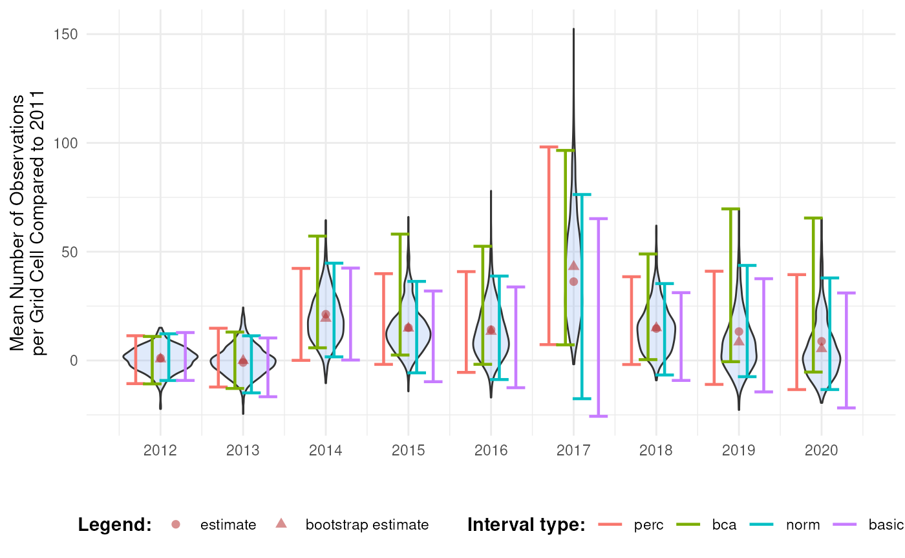
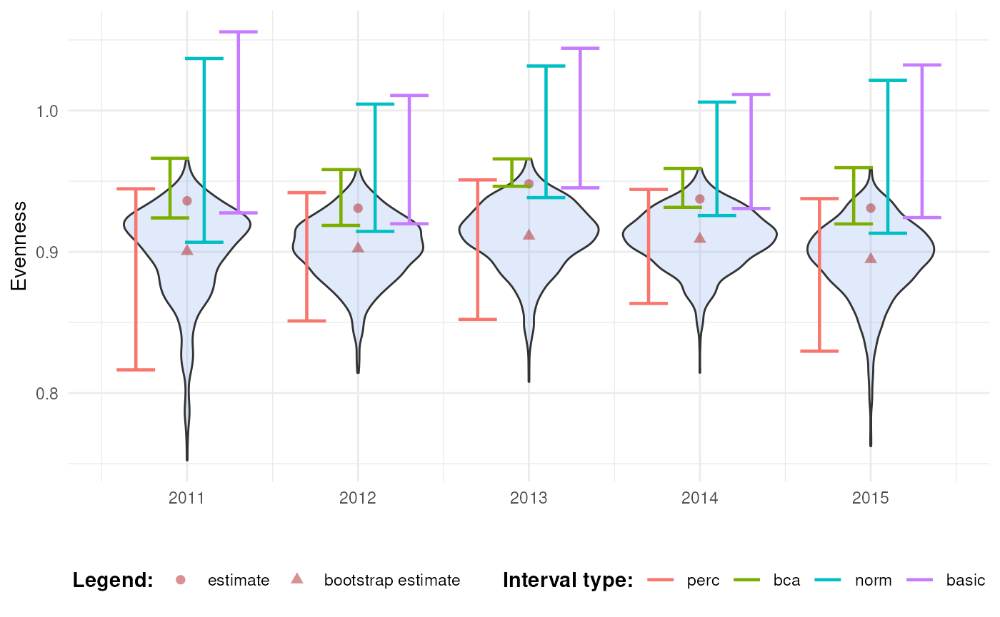
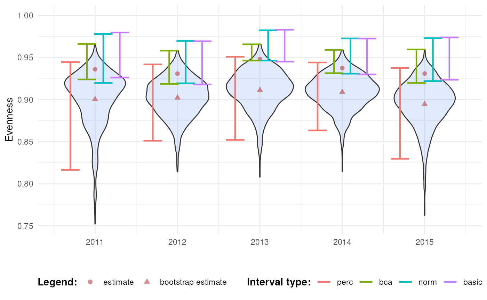
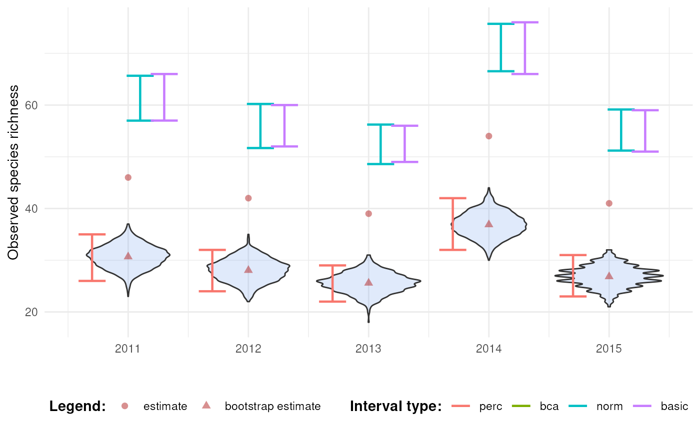
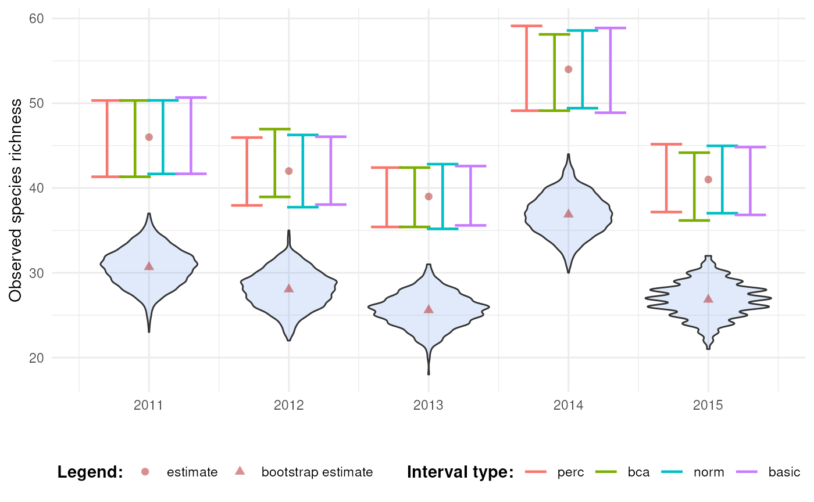

Calculating Bootstrap Confidence Intervals
Source:vignettes/articles/bootstrap-interval-calculation.Rmd
bootstrap-interval-calculation.RmdIntroduction
When working with data cubes, it’s essential to understand the
uncertainty surrounding derived statistics. This tutorial introduces the
calculate_bootstrap_ci() function from
dubicube, which uses bootstrap replications to estimate
the confidence intervals around statistics calculated from data
cubes.
Calculating bootstrap confidence intervals
In the bootstrap tutorial, we introduced bootstrapping as a way to assess the variability of statistics calculated from data cubes. Bootstrapping involves repeatedly resampling the dataset and recalculating the statistic to create a distribution of possible outcomes (= bootstrap replicates).
This tutorial builds on that foundation by showing how to compute confidence intervals from those bootstrap replicates. Confidence intervals provide a useful summary of uncertainty by indicating a range within which the true value of the statistic is likely to be. We consider four different types of intervals (with confidence level \(\alpha\)). The choice of confidence interval types and their calculation is in line with the boot package in R (Canty & Ripley, 1999), to ensure ease of implementation. They are based on the definitions provided by Davison & Hinkley (1997, Chapter 5) (see also DiCiccio & Efron, 1996; Efron, 1987).
1. Percentile
Uses the percentiles of the bootstrap distribution.
\[ CI_{\text{perc}} = \left[ \hat{\theta}^*_{(\alpha/2)}, \hat{\theta}^*_{(1-\alpha/2)} \right] \]
where \(\hat{\theta}^*_{(\alpha/2)}\) and \(\hat{\theta}^*_{(1-\alpha/2)}\) are the \(\alpha/2\) and \(1-\alpha/2\) percentiles of the bootstrap distribution, respectively.
2. Bias-Corrected and Accelerated (BCa)
Adjusts for bias and acceleration.
Bias refers to the systematic difference between the observed statistic from the original dataset and the center of the bootstrap distribution of the statistic. The bias correction term is calculated as:
\[ \hat{z}_0 = \Phi^{-1}\left(\frac{\#(\hat{\theta}^*_b < \hat{\theta})}{B}\right) \]
where \(\#\) is the counting operator, counting the number of times \(\hat{\theta}^*_b\) is smaller than \(\hat{\theta}\), and \(\Phi^{-1}\) is the inverse cumulative density function of the standard normal distribution. \(B\) is the number of bootstrap samples.
Acceleration quantifies how sensitive the variability of the statistic is to changes in the data. See further for how this is calculated:
- \(a = 0\): The statistic’s variability does not depend on the data (e.g., symmetric distribution)
- \(a > 0\): Small changes in the data have a large effect on the statistic’s variability (e.g., positive skew)
- \(a < 0\): Small changes in the data have a smaller effect on the statistic’s variability (e.g., negative skew)
The bias and acceleration estimates are then used to calculate adjusted percentiles:
\[ \alpha_1 = \Phi\left( \hat{z}_0 + \frac{\hat{z}_0 + z_{\alpha/2}}{1 - \hat{a}(\hat{z}_0 + z_{\alpha/2})} \right), \quad \alpha_2 = \Phi\left( \hat{z}_0 + \frac{\hat{z}_0 + z_{1 - \alpha/2}}{1 - \hat{a}(\hat{z}_0 + z_{1 - \alpha/2})} \right) \]
So, we get:
\[ CI_{\text{bca}} = \left[ \hat{\theta}^*_{(\alpha_1)}, \hat{\theta}^*_{(\alpha_2)} \right] \]
3. Normal
Assumes the bootstrap distribution of the statistic is approximately normal:
\[ CI_{\text{norm}} = \left[\hat{\theta} - \text{Bias}_{\text{boot}} - \text{SE}_{\text{boot}} \cdot z_{1-\alpha/2}, \hat{\theta} - \text{Bias}_{\text{boot}} + \text{SE}_{\text{boot}} \cdot z_{1-\alpha/2} \right] \]
where \(z_{1-\alpha/2}\) is the \(1-\alpha/2\) quantile of the standard normal distribution.
4. Basic
Centers the interval using percentiles:
\[ CI_{\text{basic}} = \left[ 2\hat{\theta} - \hat{\theta}^*_{(1-\alpha/2)}, 2\hat{\theta} - \hat{\theta}^*_{(\alpha/2)} \right] \]
where \(\hat{\theta}^*_{(\alpha/2)}\) and \(\hat{\theta}^*_{(1-\alpha/2)}\) are the \(\alpha/2\) and \(1-\alpha/2\) percentiles of the bootstrap distribution, respectively.
Calculating acceleration
The acceleration is calculated as follows:
\[ \hat{a} = \frac{1}{6} \frac{\sum_{i = 1}^{n}(I_i^3)}{\left( \sum_{i = 1}^{n}(I_i^2) \right)^{3/2}} \]
where \(I_i\) denotes the influence of data point \(x_i\) on the estimation of \(\theta\). \(I_i\) can be estimated using jackknifing. Examples are (1) the negative jackknife: \(I_i = (n-1)(\hat{\theta} - \hat{\theta}_{-i})\), and (2) the positive jackknife \(I_i = (n+1)(\hat{\theta}_{-i} - \hat{\theta})\) (Frangos & Schucany, 1990). Here, \(\hat{\theta}_{-i}\) is the estimated value leaving out the \(i\)’th data point \(x_i\). The boot package also offers infinitesimal jackknife and regression estimation. Implementation of these jackknife algorithms can be explored in the future.
In case of the BCa interval, calculate_bootstrap_ci()
uses the function calculate_acceleration() to calculate
acceleration. The latter can also be used on its own to calculate
acceleration values to quantify the sensitivity of a statistic’s
variability to changes in the dataset. For jackknifing, it uses the
perform_jackknifing() function which is not exported by
dubicube.
Getting started with dubicube
Our method can be used on any dataframe from which a statistic is calculated and a grouping variable is present. For this tutorial, we focus on occurrence cubes. Therefore, we will use the b3gbi package for processing the raw data before we go over to bootstrapping.
# Load packages
library(ggplot2) # Data visualisation
library(dplyr) # Data wrangling
library(tidyr) # Data wrangling
# Data loading and processing
library(frictionless) # Load example datasets
library(b3gbi) # Process occurrence cubes
library(dubicube) # Analysis of data quality & indicator uncertaintyLoading and processing the data
We load the bird cube data from the b3data data package using frictionless (see also here). It is an occurrence cube for birds in Belgium between 2000 en 2024 using the MGRS grid at 10 km scale.
# Read data package
b3data_package <- read_package(
"https://zenodo.org/records/15211029/files/datapackage.json"
)
# Load bird cube data
bird_cube_belgium <- read_resource(b3data_package, "bird_cube_belgium_mgrs10")
head(bird_cube_belgium)
#> # A tibble: 6 × 8
#> year mgrscode specieskey species family n mincoordinateuncerta…¹
#> <dbl> <chr> <dbl> <chr> <chr> <dbl> <dbl>
#> 1 2000 31UDS65 2473958 Perdix perdix Phasi… 1 3536
#> 2 2000 31UDS65 2474156 Coturnix coturn… Phasi… 1 3536
#> 3 2000 31UDS65 2474377 Fulica atra Ralli… 5 1000
#> 4 2000 31UDS65 2475443 Merops apiaster Merop… 6 1000
#> 5 2000 31UDS65 2480242 Vanellus vanell… Chara… 1 3536
#> 6 2000 31UDS65 2480637 Accipiter nisus Accip… 1 3536
#> # ℹ abbreviated name: ¹mincoordinateuncertaintyinmeters
#> # ℹ 1 more variable: familycount <dbl>We process the cube with b3gbi. First, we select 2000 random rows to make the dataset smaller. This is to reduce the computation time for this tutorial. We select the data from 2011 - 2020.
set.seed(123)
# Make dataset smaller
rows <- sample(nrow(bird_cube_belgium), 2000)
bird_cube_belgium <- bird_cube_belgium[rows, ]
# Process cube
processed_cube <- process_cube(
bird_cube_belgium,
first_year = 2011,
last_year = 2020,
cols_occurrences = "n"
)
processed_cube
#>
#> Processed data cube for calculating biodiversity indicators
#>
#> Date Range: 2011 - 2020
#> Single-resolution cube with cell size 10km ^2
#> Number of cells: 242
#> Grid reference system: mgrs
#> Coordinate range:
#> xmin xmax ymin ymax
#> 280000 710000 5490000 5700000
#>
#> Total number of observations: 45143
#> Number of species represented: 253
#> Number of families represented: 57
#>
#> Kingdoms represented: Data not present
#>
#> First 10 rows of data (use n = to show more):
#>
#> # A tibble: 957 × 13
#> year cellCode taxonKey scientificName family obs minCoordinateUncerta…¹
#> <dbl> <chr> <dbl> <chr> <chr> <dbl> <dbl>
#> 1 2011 31UFS56 5231918 Cuculus canorus Cucul… 11 3536
#> 2 2011 31UES28 5739317 Phoenicurus phoe… Musci… 6 3536
#> 3 2011 31UFS64 6065824 Chroicocephalus … Larid… 143 1000
#> 4 2011 31UFS96 2492576 Muscicapa striata Musci… 3 3536
#> 5 2011 31UES04 5231198 Passer montanus Passe… 1 3536
#> 6 2011 31UES85 5229493 Garrulus glandar… Corvi… 23 707
#> 7 2011 31UES88 10124612 Anser anser x Br… Anati… 1 100
#> 8 2011 31UES22 2481172 Larus marinus Larid… 8 1000
#> 9 2011 31UFS43 2481139 Larus argentatus Larid… 10 3536
#> 10 2011 31UFT00 9274012 Spatula querqued… Anati… 8 3536
#> # ℹ 947 more rows
#> # ℹ abbreviated name: ¹minCoordinateUncertaintyInMeters
#> # ℹ 6 more variables: familyCount <dbl>, xcoord <dbl>, ycoord <dbl>,
#> # utmzone <int>, hemisphere <chr>, resolution <chr>Analysis of the data
Let’s say we are interested in the mean number of observations per grid cell per year. We create a function to calculate this.
# Function to calculate statistic of interest
# Mean number of observations per grid cell per year
mean_obs <- function(data) {
data %>%
dplyr::mutate(x = mean(obs), .by = "cellCode") %>%
dplyr::summarise(diversity_val = mean(x), .by = "year") %>%
as.data.frame()
}We get the following results:
mean_obs(processed_cube$data)
#> year diversity_val
#> 1 2011 34.17777
#> 2 2012 35.27201
#> 3 2013 33.25581
#> 4 2014 55.44160
#> 5 2015 49.24754
#> 6 2016 48.34063
#> 7 2017 70.42202
#> 8 2018 48.83850
#> 9 2019 47.46795
#> 10 2020 43.00411On their own, these values don’t reveal how much uncertainty surrounds them. To better understand their variability, we use bootstrapping to estimate the distribution of the yearly means. From this distribution, we can calculate bootstrap confidence intervals.
Bootstrapping
We use the bootstrap_cube() function to perform
bootstrapping (see also the bootstrap
tutorial).
bootstrap_results <- bootstrap_cube(
data_cube = processed_cube,
fun = mean_obs,
grouping_var = "year",
samples = 1000,
seed = 123
)
#> [1] "Performing whole-cube bootstrap with `boot::boot()`."Interval calculation
Now we can use the calculate_bootstrap_ci() function to
calculate confidence limits. It relies on the following arguments:
bootstrap_samples_df: A dataframe containing the bootstrap replicates, where each row represents a bootstrap sample. As returned bybootstrap_cube().grouping_var: The column(s) used for grouping the output offun(). For example, iffun()returns one value per year, usegrouping_var = "year".-
type: A character vector specifying the type(s) of confidence intervals to compute. Options include:-
"perc": Percentile interval -
"bca": Bias-corrected and accelerated interval -
"norm": Normal interval -
"basic": Basic interval -
"all": Compute all available interval types (default)
-
conf: The confidence level of the intervals. Default is0.95(95 % confidence level).aggregate: Logical. IfTRUE(default), the function returns confidence limits per group. IfFALSE, the confidence limits are added to the original bootstrap dataframebootstrap_samples_df.data_cube: Only used whentype = "bca"and no boot method is used. The input data as a processed data cube (fromb3gbi::process_cube()).fun: Only used whentype = "bca"and no boot method is used. A user-defined function that computes the statistic(s) of interest fromdata_cube$data. This function should return a dataframe that includes a column nameddiversity_val, containing the statistic to evaluate.progress: Logical flag to show a progress bar. Set toTRUEto enable progress reporting; default isFALSE.
We get a warning message for BCa calculation because we are using a
relatively small dataset. Since we are working with "boot"
objects, we do not need to specify data_cube or
fun.
ci_mean_obs <- calculate_bootstrap_ci(
bootstrap_samples_df = bootstrap_results,
grouping_var = "year",
type = c("perc", "bca", "norm", "basic"),
conf = 0.95
)
#> Warning in norm.inter(t, adj.alpha): extreme order statistics used as endpoints
head(ci_mean_obs)
#> year est_original int_type ll ul conf
#> 1 2011 34.17777 norm 26.20924 43.08325 0.95
#> 2 2011 34.17777 basic 24.99408 42.17612 0.95
#> 3 2011 34.17777 perc 26.17942 43.36146 0.95
#> 4 2011 34.17777 bca 27.43845 45.60900 0.95
#> 5 2012 35.27201 norm 28.62332 43.67756 0.95
#> 6 2012 35.27201 basic 28.26708 43.07078 0.95We visualise the distribution of the bootstrap replicates and the confidence intervals.
# Make interval type a factor
ci_mean_obs <- ci_mean_obs %>%
mutate(
year = as.numeric(year),
int_type = factor(
int_type, levels = c("perc", "bca", "norm", "basic")
)
)
# Convert bootstrap replicates to dataframe
bootstrap_results_df <- boot_list_to_dataframe(
boot_list = bootstrap_results,
grouping_var = "year"
) %>%
mutate(year = as.numeric(year))
# Get bias values
bias_mean_obs <- bootstrap_results_df %>%
distinct(year, estimate = est_original, `bootstrap estimate` = est_boot)
# Get estimate values
estimate_mean_obs <- bias_mean_obs %>%
pivot_longer(cols = c("estimate", "bootstrap estimate"),
names_to = "Legend", values_to = "value") %>%
mutate(Legend = factor(Legend, levels = c("estimate", "bootstrap estimate"),
ordered = TRUE))
# Visualise
bootstrap_results_df %>%
ggplot(aes(x = year)) +
# Distribution
geom_violin(aes(y = rep_boot, group = year),
fill = alpha("cornflowerblue", 0.2)) +
# Estimates and bias
geom_point(data = estimate_mean_obs, aes(y = value, shape = Legend),
colour = "firebrick", size = 2, alpha = 0.5) +
# Intervals
geom_errorbar(data = ci_mean_obs,
aes(ymin = ll, ymax = ul, colour = int_type),
position = position_dodge(0.8), linewidth = 0.8) +
# Settings
labs(y = "Mean Number of Observations\nper Grid Cell",
x = "", shape = "Legend:", colour = "Interval type:") +
scale_x_continuous(breaks = sort(unique(bootstrap_results_df$year))) +
theme_minimal() +
theme(legend.position = "bottom",
legend.title = element_text(face = "bold"))
See the visualising temporal trends tutorial for information on which interval types should be calculated and/or reported and how temporal trends can be visualised.
Advanced usage of calculate_bootstrap_ci()
Comparison with a reference group
As discussed in the bootstrap tutorial, we can also compare indicator values to a reference group. In time series analyses, this often means comparing each year’s indicator to a baseline year (e.g., the first or last year in the series). To do this, we perform bootstrapping over the difference between indicator values. This process yields bootstrap replicate distributions of differences in indicator values.
bootstrap_results_ref <- bootstrap_cube(
data_cube = processed_cube,
fun = mean_obs,
grouping_var = "year",
samples = 1000,
ref_group = 2011,
seed = 123
)
#> [1] "Performing whole-cube bootstrap."
head(bootstrap_results_ref)
#> sample year est_original rep_boot est_boot se_boot bias_boot
#> 1 1 2012 1.094245 8.1881078 0.6583191 5.475053 -0.4359261
#> 2 2 2012 1.094245 7.6061946 0.6583191 5.475053 -0.4359261
#> 3 3 2012 1.094245 -4.6058908 0.6583191 5.475053 -0.4359261
#> 4 4 2012 1.094245 2.4102039 0.6583191 5.475053 -0.4359261
#> 5 5 2012 1.094245 6.2626545 0.6583191 5.475053 -0.4359261
#> 6 6 2012 1.094245 -0.1577162 0.6583191 5.475053 -0.4359261If the BCa interval is calculated and a reference group is used, jackknifing is implemented differently. Consider \(\hat{\theta} = \hat{\theta}_1 - \hat{\theta}_2\) where \(\hat{\theta}_1\) is the estimate for the indicator value of a non-reference period (sample size \(n_1\)) and \(\hat{\theta}_2\) is the estimate for the indicator value of a reference period (sample size \(n_2\)). The acceleration is now calculated as follows:
\[ \hat{a} = \frac{1}{6} \frac{\sum_{i = 1}^{n_1 + n_2}(I_i^3)}{\left( \sum_{i = 1}^{n_1 + n_2}(I_i^2) \right)^{3/2}} \]
\(I_i\) can be calculated using the negative or positive jackknife. Such that
\(\hat{\theta}_{-i} = \hat{\theta}_{1,-i} - \hat{\theta}_2 \text{ for } i = 1, \ldots, n_1\), and
\(\hat{\theta}_{-i} = \hat{\theta}_{1} - \hat{\theta}_{2,-i} \text{ for } i = n_1 + 1, \ldots, n_1 + n_2\)
Therefore, if you want to calculate the BCa intervals using
calculate_bootstrap_ci(), you also need to provide
ref_group = 2011. Since we are not working with
"boot" objects, we need to specify data_cube
and fun as well.
ci_mean_obs_ref <- calculate_bootstrap_ci(
bootstrap_samples_df = bootstrap_results_ref,
grouping_var = "year",
type = c("perc", "bca", "norm", "basic"),
data_cube = processed_cube, # Required for BCa
fun = mean_obs, # Required for BCa
ref_group = 2011 # Required for BCa
)
#> Warning in norm_inter(h(t), adj_alpha): Extreme order statistics used as
#> endpoints.
#> Warning in norm_inter(h(t), adj_alpha): Extreme order statistics used as
#> endpoints.
ci_mean_obs_ref %>%
filter(int_type == "bca") %>%
head()
#> year est_original est_boot se_boot bias_boot int_type conf ll
#> 1 2012 1.0942452 0.65831911 5.475053 -0.4359261 bca 0.95 -10.762164
#> 2 2013 -0.9219589 -0.07108256 6.690590 0.8508764 bca 0.95 -12.851385
#> 3 2014 21.2638321 19.32958556 10.982093 -1.9342466 bca 0.95 5.818720
#> 4 2015 15.0697689 14.80578656 10.723767 -0.2639823 bca 0.95 2.503933
#> 5 2016 14.1628569 13.30622198 12.131657 -0.8566350 bca 0.95 -1.755266
#> 6 2017 36.2442462 43.13141123 23.943155 6.8871650 bca 0.95 7.190653
#> ul
#> 1 11.04344
#> 2 13.06589
#> 3 57.17064
#> 4 58.08685
#> 5 52.49345
#> 6 96.55713We see that the mean number of observations is higher in some years compared to 2011. Because the BCa intervals are above 0 in 2014, 2015, 2017 and 2018, we might even say it is significant for those years. This will be further explored in the effect classification tutorial.
# Make interval type factor
ci_mean_obs_ref <- ci_mean_obs_ref %>%
mutate(
int_type = factor(
int_type, levels = c("perc", "bca", "norm", "basic")
)
)
# Get bias vales
bias_mean_obs <- bootstrap_results_ref %>%
distinct(year, estimate = est_original, `bootstrap estimate` = est_boot)
# Get estimate values
estimate_mean_obs <- bias_mean_obs %>%
pivot_longer(cols = c("estimate", "bootstrap estimate"),
names_to = "Legend", values_to = "value") %>%
mutate(Legend = factor(Legend, levels = c("estimate", "bootstrap estimate"),
ordered = TRUE))
# Visualise
bootstrap_results_ref %>%
ggplot(aes(x = year)) +
# Distribution
geom_violin(aes(y = rep_boot, group = year),
fill = alpha("cornflowerblue", 0.2)) +
# Estimates and bias
geom_point(data = estimate_mean_obs, aes(y = value, shape = Legend),
colour = "firebrick", size = 2, alpha = 0.5) +
# Intervals
geom_errorbar(data = ci_mean_obs_ref,
aes(ymin = ll, ymax = ul, colour = int_type),
position = position_dodge(0.8), linewidth = 0.8) +
# Settings
labs(y = "Mean Number of Observations\nper Grid Cell Compared to 2011",
x = "", shape = "Legend:", colour = "Interval type:") +
scale_x_continuous(breaks = sort(unique(bootstrap_results_ref$year))) +
theme_minimal() +
theme(legend.position = "bottom",
legend.title = element_text(face = "bold"))
#> Warning: Using shapes for an ordinal variable is not advised
Note that the choice of the reference year should be well considered. Keep in mind which comparisons should be made, and what the motivation is behind the reference period. A high or low value in the reference period relative to other periods, e.g. an exceptional bad or good year, can affect the magnitude and direction of the calculated differences. Whether this should be avoided or not, depends on the motivation behind the choice and the research question. A reference period can be determined by legislation, or by the start of a monitoring campaign. A specific research question can determine the periods that need to be compared. Furthermore, the variability of the estimate of reference period affects the width of confidence intervals for the differences. A more variable reference period will propagate greater uncertainty. In the case of GBIF data, more data will be available in recent years than in earlier years. If this is the case, it could make sense to select the last period as a reference period. In a way, this also avoids the arbitrariness of choice for the reference period. You compare previous situations with the current situation (last year), where you could repeat this comparison annually, for example. Finally, when comparing multiple indicators, we recommend using a consistent reference period to maintain comparability
Transformations
Consider the calculation of Pielou’s evenness on a random subset of the data from 2011-2015. We take only a small subset of the dataset and we artificially create a community with high evenness. This is an indicator that has values between 0 and 1. Higher evenness values indicate a more balanced community (a value of 1 means that all species are equally abundant), while low values indicate a more unbalanced community (a value of 0 means that one species dominates completely).
set.seed(123)
# Make dataset smaller
rows <- sample(nrow(bird_cube_belgium), 1000)
bird_cube_belgium_even <- bird_cube_belgium[rows, ]
# Make dataset even
bird_cube_belgium_even$n <- rnbinom(nrow(bird_cube_belgium_even),
size = 2, mu = 100)
# Process cube
processed_cube_even <- process_cube(
bird_cube_belgium_even,
first_year = 2011,
last_year = 2015,
cols_occurrences = "n"
)We create a custom function to calculate evenness:
calc_evenness <- function(data) {
data %>%
# Calculate number of observations
dplyr::group_by(year, scientificName) %>%
dplyr::summarise(obs = sum(obs), .groups = "drop_last") %>%
# Calculate evenness by year
dplyr::mutate(
tot = sum(obs),
p = obs / tot,
p_ln_p = p * log(p),
ln_S = log(dplyr::n_distinct(scientificName)),
diversity_val = (-sum(p_ln_p)) / ln_S
) %>%
dplyr::ungroup() %>%
# Get distinct values
dplyr::distinct(year, diversity_val)
}We perform bootstrapping as before. Note that you can also perform
bootstrapping of processed_cube_even using the
b3gbi function pielou_evenness_ts().
bootstrap_results_evenness <- bootstrap_cube(
data_cube = processed_cube_even,
fun = calc_evenness,
grouping_var = "year",
samples = 1000,
seed = 123
)
#> [1] "Performing group-specific bootstrap with `boot::boot()`."We calculate the percentile, BCa, normal and basic intervals with
calculate_bootstrap_ci(). We get a warning message for BCa
calculation because we are using a relatively small dataset.
ci_evenness <- calculate_bootstrap_ci(
bootstrap_samples_df = bootstrap_results_evenness,
grouping_var = "year",
type = c("perc", "bca", "norm", "basic")
)
#> Warning in norm.inter(t, adj.alpha): extreme order statistics used as endpoints
#> Warning in norm.inter(t, adj.alpha): extreme order statistics used as endpoints
#> Warning in norm.inter(t, adj.alpha): extreme order statistics used as endpoints
#> Warning in norm.inter(t, adj.alpha): extreme order statistics used as endpoints
#> Warning in norm.inter(t, adj.alpha): extreme order statistics used as endpoints
# Make interval type factor
ci_evenness <- ci_evenness %>%
mutate(
year = as.numeric(year),
int_type = factor(
int_type, levels = c("perc", "bca", "norm", "basic")
)
)
# Convert bootstrap replicates to dataframe
bootstrap_results_evenness_df <- boot_list_to_dataframe(
boot_list = bootstrap_results_evenness,
grouping_var = "year"
) %>%
mutate(year = as.numeric(year))
# Get bias vales
bias_mean_obs <- bootstrap_results_evenness_df %>%
distinct(year, estimate = est_original, `bootstrap estimate` = est_boot)
# Get estimate values
estimate_mean_obs <- bias_mean_obs %>%
pivot_longer(cols = c("estimate", "bootstrap estimate"),
names_to = "Legend", values_to = "value") %>%
mutate(Legend = factor(Legend, levels = c("estimate", "bootstrap estimate"),
ordered = TRUE))
# Visualise
bootstrap_results_evenness_df %>%
ggplot(aes(x = year)) +
# Distribution
geom_violin(aes(y = rep_boot, group = year),
fill = alpha("cornflowerblue", 0.2)) +
# Estimates and bias
geom_point(data = estimate_mean_obs, aes(y = value, shape = Legend),
colour = "firebrick", size = 2, alpha = 0.5) +
# Intervals
geom_errorbar(data = ci_evenness,
aes(ymin = ll, ymax = ul, colour = int_type),
position = position_dodge(0.8), linewidth = 0.8) +
# Settings
labs(y = "Evenness", x = "", shape = "Legend:", colour = "Interval type:") +
scale_x_continuous(
breaks = sort(unique(bootstrap_results_evenness_df$year))
) +
theme_minimal() +
theme(legend.position = "bottom",
legend.title = element_text(face = "bold"))
We notice that the normal and basic intervals have limits larger than
1 which is an impossible value for evenness. This is because their
intervals are symmetrical around \(\hat{\theta} - \text{Bias}_{\text{boot}}\).
We can use transformation functions to account for this. The intervals
are calculated on the scale of h and the inverse function
hinv are applied to the resulting intervals. For values
between 0 and 1, we can use the logit function and its inverse:
# Logit transformation
logit <- function(p) {
log(p / (1 - p))
}
# Inverse logit transformation
inv_logit <- function(l) {
exp(l) / (1 + exp(l))
}We enter them through calculate_bootstrap_ci().
ci_evenness_trans <- calculate_bootstrap_ci(
bootstrap_samples_df = bootstrap_results_evenness,
grouping_var = "year",
type = c("perc", "bca", "norm", "basic"),
h = logit,
hinv = inv_logit
)
#> Warning in norm.inter(t, adj.alpha): extreme order statistics used as endpoints
#> Warning in norm.inter(t, adj.alpha): extreme order statistics used as endpoints
#> Warning in norm.inter(t, adj.alpha): extreme order statistics used as endpoints
#> Warning in norm.inter(t, adj.alpha): extreme order statistics used as endpoints
#> Warning in norm.inter(t, adj.alpha): extreme order statistics used as endpoints
# Make interval type factor
ci_evenness_trans <- ci_evenness_trans %>%
mutate(
year = as.numeric(year),
int_type = factor(
int_type, levels = c("perc", "bca", "norm", "basic")
)
)
# Visualise
bootstrap_results_evenness_df %>%
ggplot(aes(x = year)) +
# Distribution
geom_violin(aes(y = rep_boot, group = year),
fill = alpha("cornflowerblue", 0.2)) +
# Estimates and bias
geom_point(data = estimate_mean_obs, aes(y = value, shape = Legend),
colour = "firebrick", size = 2, alpha = 0.5) +
# Intervals
geom_errorbar(data = ci_evenness_trans,
aes(ymin = ll, ymax = ul, colour = int_type),
position = position_dodge(0.8), linewidth = 0.8) +
# Settings
labs(y = "Evenness", x = "", shape = "Legend:", colour = "Interval type:") +
scale_y_continuous(limits = c(NA, 1)) +
scale_x_continuous(
breaks = sort(unique(bootstrap_results_evenness_df$year))
) +
theme_minimal() +
theme(legend.position = "bottom",
legend.title = element_text(face = "bold"))
Now we see that all the intervals fall within the expected range.
Issues with bias correction for species richness indicators
Consider the calculation of observed species richness on the same subset used in the previous subsection. We create a custom function to calculate richness:
calc_richness <- function(data) {
data %>%
dplyr::group_by(year) %>%
dplyr::summarise(diversity_val = n_distinct(scientificName),
.groups = "drop")
}We perform bootstrapping as before. We will not use any boot method
(method = "group_specific").
bootstrap_results_richness <- bootstrap_cube(
data_cube = processed_cube_even,
fun = calc_richness,
grouping_var = "year",
samples = 1000,
method = "group_specific",
seed = 123
)
#> [1] "Performing group-specific bootstrap."We calculate the percentile, BCa, normal and basic intervals with
calculate_bootstrap_ci(). We get a warning message for BCa
calculation. The bias is infinite such that the BCa intervals cannot be
calculated.
ci_richness <- calculate_bootstrap_ci(
bootstrap_samples_df = bootstrap_results_richness,
grouping_var = "year",
type = c("perc", "bca", "norm", "basic"),
data_cube = processed_cube_even,
fun = calc_richness
)
#> Warning in bca_ci(t0 = unique(df$est_original), t = df$rep_boot, a = a, :
#> Estimated adjustment 'z0' is infinite.
#> Warning in bca_ci(t0 = unique(df$est_original), t = df$rep_boot, a = a, :
#> Estimated adjustment 'z0' is infinite.
#> Warning in bca_ci(t0 = unique(df$est_original), t = df$rep_boot, a = a, :
#> Estimated adjustment 'z0' is infinite.
#> Warning in bca_ci(t0 = unique(df$est_original), t = df$rep_boot, a = a, :
#> Estimated adjustment 'z0' is infinite.
#> Warning in bca_ci(t0 = unique(df$est_original), t = df$rep_boot, a = a, :
#> Estimated adjustment 'z0' is infinite.We notice that none of the intervals cover the estimate. The percentile interval does not account for bias, the BCa interval cannot be calculated because the bias is too large and the normal and basic intervals have overcompensated because of the large bootstrap bias.
# Make interval type factor
ci_richness <- ci_richness %>%
mutate(
int_type = factor(
int_type, levels = c("perc", "bca", "norm", "basic")
)
)
# Get bias vales
bias_mean_obs <- bootstrap_results_richness %>%
distinct(year, estimate = est_original, `bootstrap estimate` = est_boot)
# Get estimate values
estimate_mean_obs <- bias_mean_obs %>%
pivot_longer(cols = c("estimate", "bootstrap estimate"),
names_to = "Legend", values_to = "value") %>%
mutate(Legend = factor(Legend, levels = c("estimate", "bootstrap estimate"),
ordered = TRUE))
# Visualise
bootstrap_results_richness %>%
ggplot(aes(x = year)) +
# Distribution
geom_violin(aes(y = rep_boot, group = year),
fill = alpha("cornflowerblue", 0.2)) +
# Estimates and bias
geom_point(data = estimate_mean_obs, aes(y = value, shape = Legend),
colour = "firebrick", size = 2, alpha = 0.5) +
# Intervals
geom_errorbar(data = ci_richness,
aes(ymin = ll, ymax = ul, colour = int_type),
position = position_dodge(0.8), linewidth = 0.8) +
# Settings
labs(y = "Observed species richness", x = "", shape = "Legend:",
colour = "Interval type:") +
scale_x_continuous(breaks = sort(unique(bootstrap_results_richness$year))) +
theme_minimal() +
theme(legend.position = "bottom",
legend.title = element_text(face = "bold"))
#> Warning: Using shapes for an ordinal variable is not advised
This issue arises because bootstrap resampling cannot introduce new species that were not present in the original sample (Dixon, 2001, p. 287). As a result, the observed species richness — which is simply the count of unique species — tends to be negatively biased in bootstrap replicates. This leads to an extreme mismatch between the original estimate and the distribution of bootstrap replicates. In such cases, the BCa intervals may fail altogether (e.g., due to infinite bias correction factors), and other bootstrap intervals (normal, basic) may overcorrect.
There is an option within calculate_bootstrap_ci() to
center the confidence limits around the original estimate
(no_bias = TRUE). This means the bootstrap distribution is
used to calculate confidence intervals, except for the bootstrap bias.
While it may “solve” technical problems with interval calculation (like
infinite or undefined corrections), it does so at the cost of ignoring
bootstrap bias. This approach should only be used with caution and clear
justification, such as when the bootstrap bias is known to be an
artifact of a sampling limitation and not of the underlying data
structure.
Because of this inherent limitation, alternative richness estimators that account for undetected species are preferred when uncertainty quantification is needed. The vegan (Oksanen et al., 2024) and iNEXT (Hsieh et al., 2016) R packages provide such estimators, including Chao, Jackknife, and coverage-based rarefaction/extrapolation, all of which are designed to handle unseen species and provide meaningful uncertainty estimates.
Some of these estimators are also implemented directly for occurrence cubes in recent versions of b3gbi (≥ v0.4.0), offering integration into existing cube-based workflows. However, it is important to note that these are alternative estimators — they are not equivalent to observed richness and will yield different values by design.
ci_richness_no_bias <- calculate_bootstrap_ci(
bootstrap_samples_df = bootstrap_results_richness,
grouping_var = "year",
type = c("perc", "bca", "norm", "basic"),
no_bias = TRUE,
data_cube = processed_cube_even,
fun = calc_richness
)Indeed, the intervals are now centered around the original estimate.
# Make interval type factor
ci_richness_no_bias <- ci_richness_no_bias %>%
mutate(
int_type = factor(
int_type, levels = c("perc", "bca", "norm", "basic")
)
)
# Visualise
bootstrap_results_richness %>%
ggplot(aes(x = year)) +
# Distribution
geom_violin(aes(y = rep_boot, group = year),
fill = alpha("cornflowerblue", 0.2)) +
# Estimates and bias
geom_point(data = estimate_mean_obs, aes(y = value, shape = Legend),
colour = "firebrick", size = 2, alpha = 0.5) +
# Intervals
geom_errorbar(data = ci_richness_no_bias,
aes(ymin = ll, ymax = ul, colour = int_type),
position = position_dodge(0.8), linewidth = 0.8) +
# Settings
labs(y = "Observed species richness", x = "", shape = "Legend:",
colour = "Interval type:") +
scale_x_continuous(breaks = sort(unique(bootstrap_results_richness$year))) +
theme_minimal() +
theme(legend.position = "bottom",
legend.title = element_text(face = "bold"))
#> Warning: Using shapes for an ordinal variable is not advised
References
Canty, A., & Ripley, B. (1999). boot: Bootstrap Functions (Originally by Angelo Canty for S) [Computer software]. https://CRAN.R-project.org/package=boot
Davison, A. C., & Hinkley, D. V. (1997). Bootstrap Methods and their Application (1st ed.). Cambridge University Press. https://doi.org/10.1017/CBO9780511802843
DiCiccio, T. J., & Efron, B. (1996). Bootstrap confidence intervals. Statistical Science, 11(3). https://doi.org/10.1214/ss/1032280214
Dixon, P. M. (2001). The Bootstrap and the Jackknife: Describing the Precision of Ecological Indices. In S. M. Scheiner & J. Gurevitch (Eds.), Design and Analysis of Ecological Experiments (Second Edition, pp. 267–288). Oxford University PressNew York, NY. https://doi.org/10.1093/oso/9780195131871.003.0014
Efron, B. (1987). Better Bootstrap Confidence Intervals. Journal of the American Statistical Association, 82(397), 171–185. https://doi.org/10.1080/01621459.1987.10478410
Frangos, C. C., & Schucany, W. R. (1990). Jackknife estimation of the bootstrap acceleration constant. Computational Statistics & Data Analysis, 9(3), 271–281. https://doi.org/10.1016/0167-9473(90)90109-U